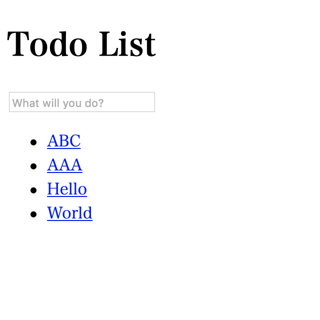
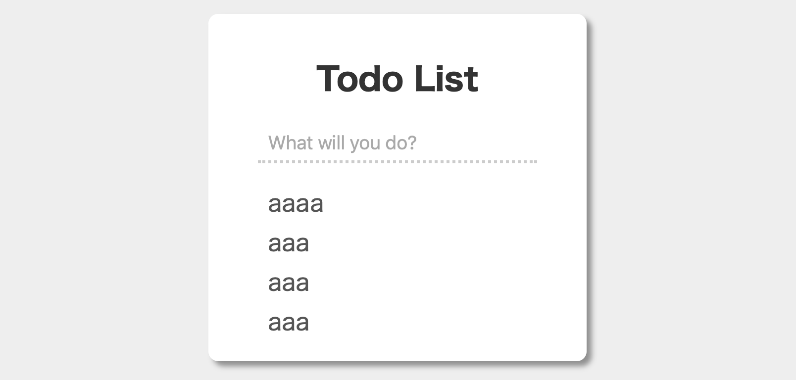

更新(2021/06/13): いくつか間違っていたところがあったので修正。
どんなTodoリストを作るか
- Todoの登録
- Todoをリスト表示
- Todoをクリックすると削除
サイトの作成
適当なディレクトリで次のコマンドを実行すると、mysiteというディレクトリが作られる。
$ django-admin startproject mysite
以降はmysiteディレクトリで作業する。
アプリの作成
mysiteディレクトリにて以下のコマンドを実行すると、todo_listというディレクトリが作られる。ここに実際のアプリの処理を記述していく。
$ python3 manage.py startapp todo_list
続いてmysite/mysite/settings.pyを開いて、INSTALL_APPSを以下の記述にする。'todo_list.apps.TodoListConfig'を追加しただけ。これはデータベース作成やテンプレート作成のために、djangoがtodo_listのディレクトリを教えているっぽい。Todo_listConfigかと思ったが違うらしい(エラーで「TodoListConfigだよ」と教えてくれた。優しい)。
INSTALLED_APPS = [
'todo_list.apps.TodoListConfig',
'django.contrib.admin',
'django.contrib.auth',
'django.contrib.contenttypes',
'django.contrib.sessions',
'django.contrib.messages',
'django.contrib.staticfiles',
]
viewの作成
mysite/todo_list/views.pyを編集する。とりあえずviewが動くかどうかだけ確認したいので、レスポンスは適当な文字列にする。
from django.http import HttpResponse
# Create your views here.
def index(request):
return HttpResponse('Hello')
urlの設定
まずmysite/mysite/urls.pyの設定をする。urls.pyとは「どんなurlにアクセスされたらどんなviewに処理を任せるか」を記述したものっぽい。ここでは、todo_list/で始まるurlだったらtodo_list/urls.pyに処理を任せるように書いている。
from django.contrib import admin
from django.urls import include, path
urlpatterns = [
path('todo_list/', include('todo_list.urls')),
path('admin/', admin.site.urls),
]
ということでmysite/todo_list/urls.pyの設定をする。恐らく存在しないので新しく作成する。todo_list/以降に何も指定されなかったら表示をviews.pyのindex関数に任せるように書いている。
from django.urls import path
from . import views
app_name = 'todo_list'
urlpatterns = [
path('', views.index, name='index'),
]
動かしてみる
$ python3 manage.py runserver
ブラウザを起動してlocalhost:8000/todo_list/にアクセスするとHelloの文字列だけ表示されたページに飛ぶ。期待通りに動いている。
Model作成
Todoの内容を保存しておくためのデータベースが必要である。Djangoでは、データベースのテーブル要素をModelとして定義する。
mysite/todo_list/models.pyの内容を以下のように編集する。今回扱うのはただのテキストだけなので、models.CharFieldしか用意しない。ただし、内部的にはtextだけでなくid変数も追加される。これはテーブルの要素を識別するためのもので、後で削除機能を実装する時に利用する。
from django.db import models
# Create your models here.
class Todo(models.Model):
text = models.CharField(max_length = 500)
テーブルを自動作成するためにマイグレーションという作業が必要らしいので、それをやる。Ctrl+Cでサーバーを終了した後、次の2コマンドを実行。
$ python3 manage.py makemigrations
$ python3 manage.py migrate
終わったらサーバーを再起動する。
Templates作成
mysite/todo_list/templates/todo_list/index.htmlを作成し、内容を以下の通りにする。ディレクトリも適当に作成する。todo_list/templates/todo_listというディレクトリ構成が気持ち悪いが、名前空間云々の理由で仕方ない(参考)。
<!DOCTYPE html>
<html lang="ja">
<head>
<meta charset="utf-8">
<title>Todo List</title>
</head>
<body>
<h1>Todo List</h1>
</body>
</html>
mysite/todo_list/views.pyを編集する。
from django.shortcuts import render
# Create your views here.
def index(request):
return render(request, 'todo_list/index.html', {})
モデルが表示できるようにする
mysite/todo_list/models.pyのTodoクラスをインポートして、Todo.objects.all()でTodoの全要素が取得できるらしい。この情報をrenderに渡すと、前項で作ったTemplateでそれが利用できるようになる。
from django.shortcuts import render
from .models import Todo
# Create your views here.
def index(request):
todos = Todo.objects.all()
print(todos)
return render(request, 'todo_list/index.html', {todos: todos})
ということでmysite/todo_list/templates/todo_list/index.htmlを編集する。djangoのtemplate構文を利用して、for-in文が書ける。便利。
<!DOCTYPE html>
<html lang="ja">
<head>
<meta charset="utf-8">
<title>Todo List</title>
</head>
<body>
<h1>Todo List</h1>
<ul>
{% for todo in todos %}
<li>{{ todo }}</li>
{% endfor %}
</ul>
</body>
</html>
しかしTodoにまだ何も要素が追加されていないので、表示されない。
Todo追加と削除機能を追加
テキストエリアでEnterが押された時にtodo_list/addにアクセスするようにする。Todoのテーブルに要素を追加する処理を書くつもり。また、Todoリストの各要素がクリックされた時にtodo_list/[TodoのId]/removeにアクセスするようにする。ここではTodoのテーブルから要素を削除する処理を書くつもり。
とりあえず外見だけ作ろう。mysite/todo_list/templates/todo_list/index.htmlを編集する。
{% url 'todo_list:name' %}を用いると、urls.pyに書かれているnameと照合してurlを生成してくれる。{% csrf_token %}はセキュリティ対策のために用いられるものらしいけど、この辺はまだ詳しくない。{% url 'todo_list:name' todo.id %}についてはurls.pyにて説明する。
<!DOCTYPE html>
<html lang="ja">
<head>
<meta charset="utf-8">
<title>Todo List</title>
</head>
<body>
<h1>Todo List</h1>
<form action="{% url 'todo_list:add' %}" method="post">
{% csrf_token %}
<input type="text" name="text" placeholder="What will you do?">
</form>
<ul>
{% for todo in todos %}
<li><a href="{% url 'todo_list:remove' todo.id %}">{{ todo.text }}</a></li>
{% endfor %}
</ul>
</body>
</html>
mysite/todo_list/urls.pyを編集する。<int:todo_id>は特殊な文法で、ここには何かしらの整数が入る。このtodo_idは``views.pyの引数として指定する。またindex.htmlで書いていた{% url ‘todo_list:remove todo.id %}のtodo.idに当たる数字がここに入って、todo_list/[todo.idの値]/removeというurlに解釈される。
from django.urls import path
from . import views
app_name = 'todo_list'
urlpatterns = [
path('', views.index, name='index'),
path('add/', views.add, name='add'),
path('<int:todo_id>/remove/', views.remove, name='remove'),
]
mysite/todo_list/views.pyを編集する。
addビューではテーブルに要素を追加する。フォーム要素からrequest.POST[name]で、form部品の情報を取得できる。ここでのnameとは、form部品のname属性である。
removeビューでは引数にtodo_idを指定している。これはurls.pyで指定していた<int:todo_id>と同じものである。get_object_or_404でTodoテーブルからid==todo_idとなるものを探し出し、もし見つからなかったら404ページを表示する。pkというのはおそらくprimary keyの略で、デフォルトではidが主キーになっているのだろう。
from django.shortcuts import render, get_object_or_404
from django.http import HttpResponseRedirect
from django.urls import reverse
from .models import Todo
# Create your views here.
def index(request):
todos = Todo.objects.all()
return render(request, 'todo_list/index.html', {'todos': todos})
def add(request):
todo = Todo(text=request.POST['text'])
todo.save()
return HttpResponseRedirect(reverse('todo_list:index', args=()))
def remove(request, todo_id):
todo = get_object_or_404(Todo, pk=todo_id)
todo.delete()
return HttpResponseRedirect(reverse('todo_list:index', args=()))
これでまともなTodoリストができた。

スタイルの変更
せっかくなのでCSSでかっこいいUIにしたい。ということで編集する。
mysite/todo_list/templates/todo_list/index.htmlを編集する。{% load static %}で、staticディレクトリ以下をデータの探索対象に含めてくれるっぽい？{% static 'todo_list/style.css' %}は/todo_list/style.cssと解釈されるっぽい。
{% load static %}
<!DOCTYPE html>
<html lang="ja">
<head>
<meta charset="utf-8">
<link rel="stylesheet" type="text/css" href="{% static 'todo_list/style.css' %}">
<title>Todo List</title>
</head>
<body>
<div class="wrapper">
<h1>Todo List</h1>
<form action="{% url 'todo_list:add' %}" method="post">
{% csrf_token %}
<input type="text" name="text" placeholder="What will you do?">
</form>
<ul>
{% for todo in todos %}
<li><a href="{% url 'todo_list:remove' todo.id %}">{{ todo.text }}</a></li>
{% endfor %}
</ul>
</div>
</body>
</html>
HTML上でtodo_list/style.cssと解釈されているファイルは、実際にはmysite/todo_list/static/todo_list/style.cssに置かれている。ということでそれを作成し、内容を以下のようにする。
* {
box-sizing: border-box;
}
body {
padding: 10px 30%;
font-family: sans-serif;
background-color: #eee;
}
.wrapper {
padding: 20px 50px;
display: flex;
flex-direction: column;
align-items: center;
justify-content: center;
background-color: #fff;
border-radius: 10px;
box-shadow: 5px 5px 5px rgba(0, 0, 0, 0.4);
}
h1 {
color: #333;
}
form {
width: 100%;
}
input[type="text"] {
height: 40px;
width: 100%;
padding: 0 0 0 10px;
font-size: 1.2em;
outline: none;
border: none;
border-bottom: 3px dotted #ccc;
color: #555;
}
ul {
width: 100%;
margin: 0;
padding: 0;
list-style-type: none;
}
li {
width: 100%;
padding: 0 0 0 10px;
margin: 0;
height: 40px;
line-height: 40px;
}
li:first-child {
margin-top: 20px;
}
li a {
text-decoration: none;
font-size: 1.5em;
color: #555;
}
$ python3 manage.py runserverでサーバーを再起動した方が良いかもしれない。そうするとCSSが反映されている。ここではstyle.cssの完成形を一気に見せてしまったが、実際には、Webページ上での表示を確認しながらCSSを作っていくことになるだろう。

参考
Django Tutorial